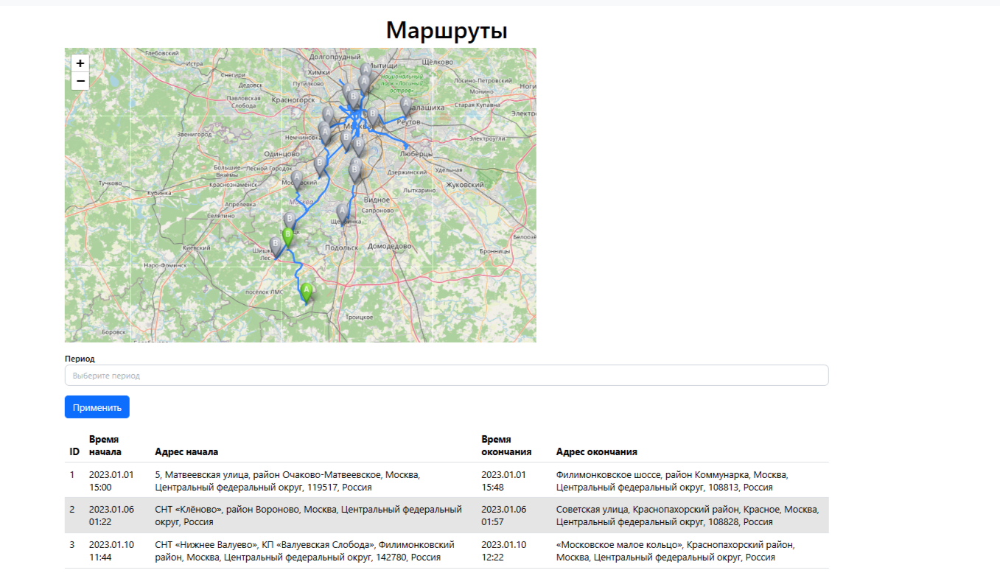
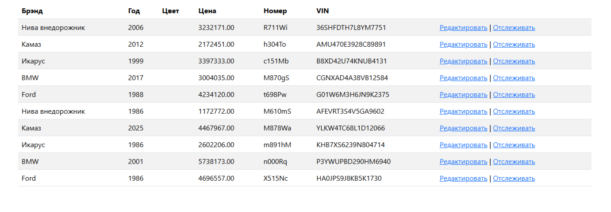
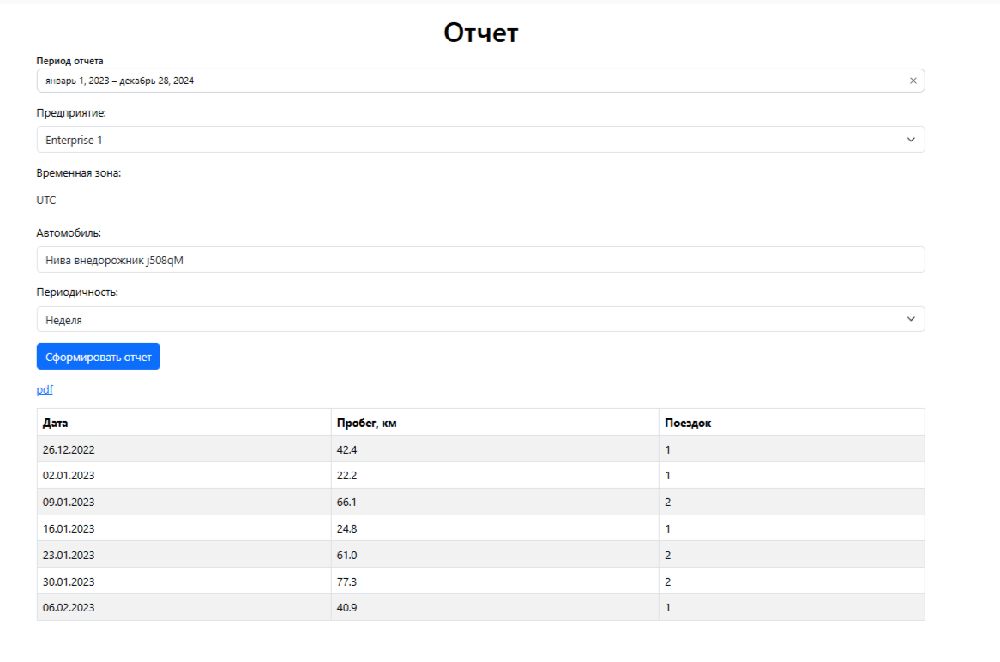
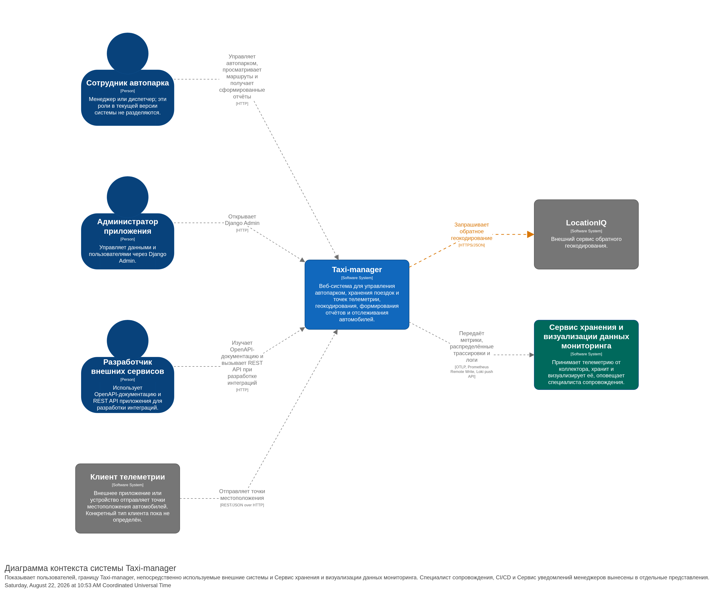
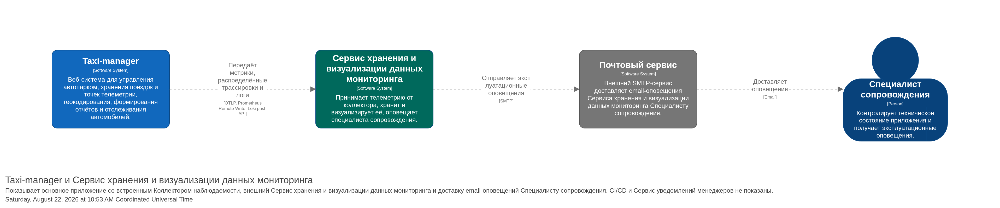
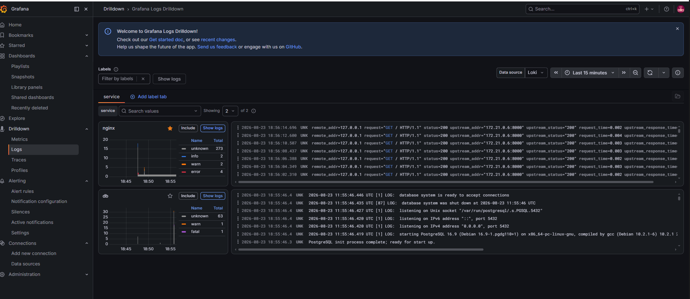
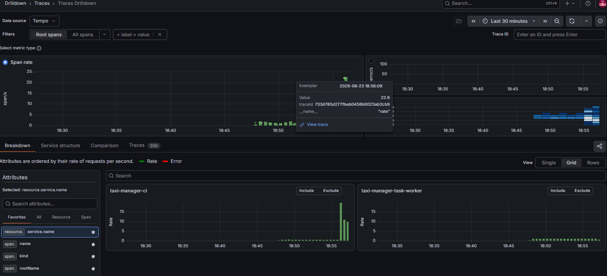

Организации и роли
Изолированный доступ к данным автопарка, авторизация и административный контур.
Учебный инженерный проект • Open source
Taxi-manager объединяет учёт автомобилей и водителей, маршруты на карте, потоковую телеметрию и отчётность для нескольких организаций.
Что внутри
Проект показывает полный путь данных: от приёма координат до отображения поездки, отчёта и диагностики сервисов. Подробности реализации остаются в техническом README, а здесь — главное за несколько минут.
Изолированный доступ к данным автопарка, авторизация и административный контур.
Единый реестр транспорта и сотрудников для ежедневной работы автопарка.
История поездок на карте и отслеживание движения по потоковой телеметрии.
Пробег, маршруты и готовые документы для анализа работы транспорта.

Рабочие сценарии
Интерфейс не пытается быть витриной: он помогает быстро найти транспорт, восстановить маршрут и подготовить отчёт.
Парк, водители и права доступа остаются разделёнными между организациями.

Параметры отчёта, рассчитанный километраж и выгрузка в PDF.

Данные на входе
Координаты приходят через REST API в формате ISO 8601 — с учётом часового пояса организации.Контракт API в README
Архитектура
Django и DRF отвечают за предметную область, React — за рабочий интерфейс, асинхронный Rust API принимает телеметрию, а PostgreSQL с PostGIS хранит геоданные и маршруты.
C4 как общий язык
Диаграммы C4 фиксируют границы системы, внешние зависимости и зоны ответственности. Это упрощает обсуждение архитектуры до чтения исходного кода.
Изучить архитектуру в README
Наблюдаемость
Метрики, логи и трассировки сходятся в едином контуре. При проблеме специалист получает сигнал и может пройти от симптома до конкретного сервиса.

Сборка, тестирование и контейнеризация встроены в жизненный цикл проекта.
Логи из Loki и распределённые трассировки из Tempo доступны в одном эксплуатационном контуре.


Продолжить знакомство
Откройте техническую документацию или сразу перейдите к исходному коду.